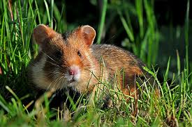
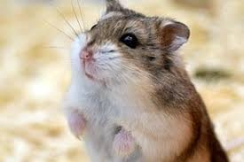

К семейству хомяков относятся небольшие, плотно сложенные грызуны с короткими конечностями, маленькими ушами и короткими хвостами. Длина тела варьируется от 5 до 34 см, хвоста от 0,7 до 10 см. Самки у некоторых видов крупнее самцов. Окраска густого меха на спине от пепельно- или буровато-серой до тёмной коричнево-охристой; на животе — чёрная, белая или серая. Иногда вдоль спины проходит чёрная полоса. Имеются очень развитые защёчные мешки
Их естественный рацион питания включает бобовые растения и семена злаковых культур – пшеницу, овес, горох, кукурузу, подсолнечник. Также едят хомяки сухие травы, овощи и фрукты, корнеплоды, ягоды и орехи. В дикой природе грызуны полноценно питаются только в летние и теплые осенние месяцы.
 